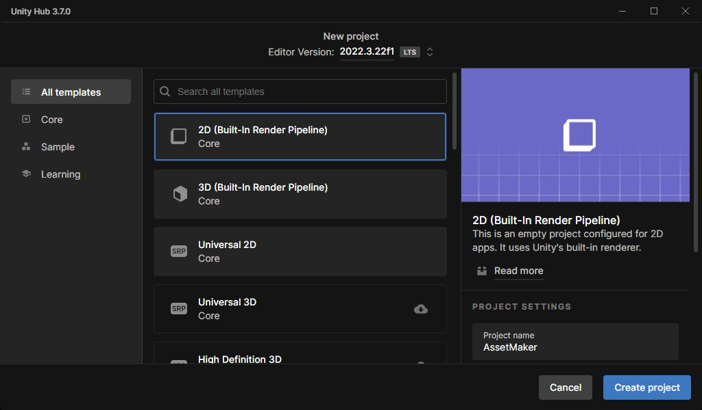
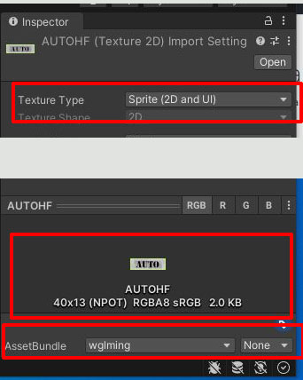
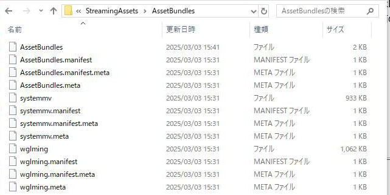

|
まずはUnityをインストールして、プロジェクトを作ります |  |
|
プロジェクトを作った後、Assets→Create→FolderでEditorというフォルダを作ります 作ったらC#のスクリプトを作ります スクリプト名はBuildAssetBundlesにします。 スクリプトに右のコードをコピーして貼り付けます | using UnityEditor; using System.IO; public class BuildAssetBundles { [MenuItem("Assets/Build AssetBundles")] static void BuildAllAssetBundles() { string outputPath = "Assets/StreamingAssets/AssetBundles"; // 出力先 if (!Directory.Exists(outputPath)) { Directory.CreateDirectory(outputPath); } BuildPipeline.BuildAssetBundles(outputPath, BuildAssetBundleOptions.None, BuildTarget.WebGL); EditorUtility.DisplayDialog("AssetBundle", "ビルドが完了しました！", "OK"); } } |
|
次に、アセット化したいファイルをAssets内に放り込みます。フォルダ内などに入れてから入れるとわかりやすくていいかもしれません。 放り込んだら、ファイルを指定すると右側のInspectorに色々な項目が出てくるので、一番下の方にあるアセットを好きな名前に変更してください。 また、絵などの場合は上の方にあるTextureTypeをSpriteに変更しておきます。 |  |
|
一通り設定したら、Assets→Build AssetsBundlesでアセットバンドルを作ります 作られたAssetsBundleはAssets→StreamingAssets→AssetBundles内に入っていますので状況に合わせて使ってください。 |  |